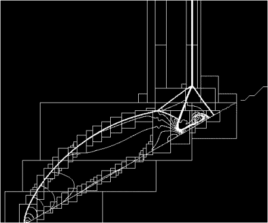

1) Increased computational savings over a static grid approach.
2) Increased storage savings over a static grid approach.
3) Complete control of grid resolution, compared to the fixed resolution of a static grid approach.
All tagged cells are then refined, meaning that a finer grid is overlayed on the coarse one. After refinement, individual grid patches on a single fixed level of refinement are passed off to an integrator which advances those cells in time. Finally, a correction procedure is implemented to correct the transfer along coarse-fine grid interfaces, to insure that the amount of any conserved quantity leaving one cells exactly balances the amount enter the bordering cell. If at some point the level of refinement in a cell is greater than required, the high resolution grid may be removed and replaced with a coarser one.
 The image to the left shows the grid structure of an AMR calculation of a shock impacting an inclined slope. Each of the boxes is a grid; the more boxes it is nested within, the higher the level of refinments. It is adapted From Colella and Crutchfield (1994).
As the image shows, the algorithm uses high resolution grids only at the physical locations and times where they are required. This lets us solve problems that are completely intractable on a uniform grid; for example,we have used the code to model the filamentary nature of isothermal collapse down to an effective resolution of 131,072 cells per initial cloud radius, corresponding to a resolution of 10^15 cells on a uniform grid.For more examples of our use of AMR in astrophysical fluid dynamics, see the research page.